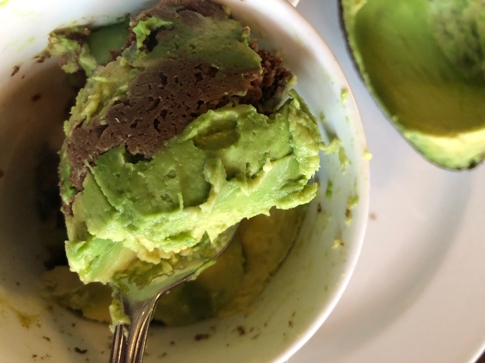

Breakfast is my favorite meal of the day. My idle day would be to start my day with big and healthy breakfast. Recently from different resources, I have come to realize that healthy breakfast can be delicious as well.I would like to share about some of my favorite breakfast in this page.

This is very simple and easy receipe that can be prepared in microwave in two minutes.First we need to collect the following ingredients.
- Cacao Powder
- Ripe Bananas
- Egg
- Coconut Flour
- Almond Flour
- Pinch of Baking soda
- Avocado or Any nut butter (optional)
- Coconut oil
- Mix one table spoon of each dry ingredients in a small bowl
- mash 1/2 or 1/4 in the same bowl
- whisk egg and add in the same bowl.Mix them properly untill it looks like batter.
- Scoop half and transfer it to the microwave safe mug ,add layer of mashed avocado or any nut butter then add rest of the remainig batter.
- Put it in the microwave for around 2 minutes,use toothpick to check if it is cooked. If the batter sticks on the toothpick then add few more seconds.
- Breakfast is ready in 5 minutes


- 3 cups Almond Flour
- 3 Tablespoon whey protein powder (optional but makes the texture of the bread more soft.)
- 1/2 Cup coconut oil
- 1/4 Coconut canned milk
- 3 Eggs
- 2 Teaspoon baking powder
- 1 Teaspoon BAKING SODA
- 1 Tablesppon Italian Seasoning
- 1/4 Teaspoon salt
Preheat oven to 300 F, mix all the ingredients and pour batter into the bread pan. Put pan inside the oven and bake it for 45 minutes to 0ne hour.Then, healthy and grainless bread is ready for breakfast. This bread can be used as any other bread,it can be toasted, it can be used for sandwhich.
As authors claim, I tried baking this bread with both adding and not adding whey powder. whey powder does help to make the texture of the bread more soft and fluffy.